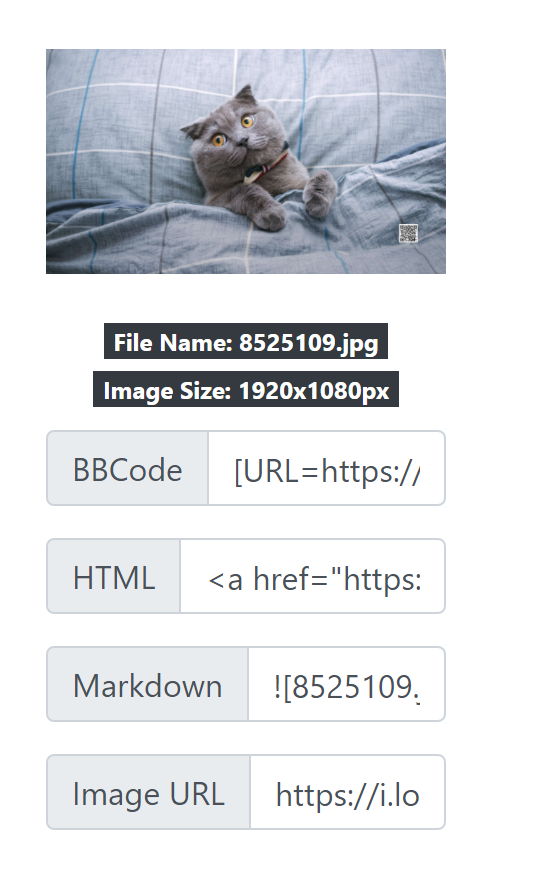

xkz的建站经历
前言~~（废话）~~
之所以我会搭这个博客，一是看到大佬们都有自己的博客，本 USTC 的小菜鸡想向大佬们看齐，一时兴起，便有了搭博客的心，二是最近打王者时信誉分被扣太惨，闲来无事，就有了搭博客的心。
由于本人懒癌晚期，因此对网站的美化可能没有那么上心，如果读者发现了什么 bug，欢迎通过页面下方的联系方式联系我。
建站经历及踩坑
这个博客的搭建使用 GitHub + Hexo，参考了妮可大神 ysy 的博客（他又参考了别人（套娃开始。不过这里先不放链接，免得读者没看注意事项就一去不回了，这里先说说我搭博客过程中踩的坑。
安装 Node.js
- 安装时版本一定要在 10.13 以上，最好在 12.0 以上（参见 Hexo 中文官网，否则在使用 npm 安装 Hexo 时会报错
- 建议下载 .msi 文件，安装时会默认将其添加到环境变量。
配置 Hexo
在 Hexo 安装完并完成 GitHub 与本地的连接后，在修改根目录下的 _config.yml 文件时，宜修改为如下形式
deploy:
type: git
repository: https://github.com/xkz0777/xkz0777.github.io
branch: main其中 branch 应该设为 main 而不是 master ，否则会导致 hexo d 命令无法正确上传本地博客到 Github 上， repository 为项目 url。
Matery 主题的配置和使用
在下载完 Matery 后，应该把 Hexo 根目录下的 _config.yml 的 theme 的值修改为如下形式
theme: matery-filename其中 matery-filename 是实际下载到的 Matery 文件夹的名称。
Matery 主题的配置，其实只要看官方帮助文档即可（中文文档，介绍的也很详细）。
对 ysy 大神博客的补充
Front-Matter
Front-Matter 是用 hexo new post post_name 命令生成的 .md 文件中的开头部分，如果要开启 mathjax 的数学公式支持，便需要在 Front-Matter 中加入
mathjax: true完整配置项如下表所示：
| 配置选项 | 默认值 | 描述 |
|---|---|---|
| title | Markdown 的文件标题 |
文章标题，强烈建议填写此选项 |
| date | 文件创建时的日期时间 | 发布时间，强烈建议填写此选项，且最好保证全局唯一 |
| author | 根 _config.yml 中的 author |
文章作者 |
| img | featureImages 中的某个值 |
文章特征图，推荐使用图床(腾讯云、七牛云、又拍云等)来做图片的路径.如: http://xxx.com/xxx.jpg |
| top | true |
推荐文章（文章是否置顶），如果 top 值为 true，则会作为首页推荐文章 |
| hide | false |
隐藏文章，如果hide值为true，则文章不会在首页显示 |
| cover | false |
v1.0.2 版本新增，表示该文章是否需要加入到首页轮播封面中 |
| coverImg | 无 | v1.0.2 版本新增，表示该文章在首页轮播封面需要显示的图片路径，如果没有，则默认使用文章的特色图片 |
| password | 无 | 文章阅读密码，如果要对文章设置阅读验证密码的话，就可以设置 password 的值，该值必须是用 SHA256 加密后的密码，防止被他人识破。前提是在主题的 config.yml 中激活了 verifyPassword 选项 |
| toc | true |
是否开启 TOC，可以针对某篇文章单独关闭 TOC 的功能。前提是在主题的 config.yml 中激活了 toc 选项 |
| mathjax | false |
是否开启数学公式支持 ，本文章是否开启 mathjax，且需要在主题的 _config.yml 文件中也需要开启才行 |
| summary | 无 | 文章摘要，自定义的文章摘要内容，如果这个属性有值，文章卡片摘要就显示这段文字，否则程序会自动截取文章的部分内容作为摘要 |
| categories | 无 | 文章分类，本主题的分类表示宏观上大的分类，只建议一篇文章一个分类 |
| tags | 无 | 文章标签，一篇文章可以多个标签 |
| keywords | 文章标题 | 文章关键字，SEO 时需要 |
| reprintPolicy | cc_by | 文章转载规则， 可以是 cc_by, cc_by_nd, cc_by_sa, cc_by_nc, cc_by_nc_nd, cc_by_nc_sa, cc0, noreprint 或 pay 中的一个 |
开启评论功能
根据 Matery _config.yml 的注释，我认为 Valine 最适合用来设置评论功能。
首先登陆 LeanCloud 官网（可能需要科学上网），点击“免费试用”并注册账号，完成后登录，点击创建应用（名称随意，只需使用开发版即可），进入该应用，在左侧栏中找到设置->应用凭证，将其中的 appId 、appKey 输入 Matery _config.yml 文件中，如下，即可开启评论功能。
valine:
enable: true
appId: yourappId
appKey: yourappKey
notify: true
verify: true
visitor: true
avatar: 'mm' # Gravatar style : mm/identicon/monsterid/wavatar/retro/hide
pageSize: 10
placeholder: 'just say something' # Comment Box placeholder
# background: /medias/cat.jpg
coolpushkey: 添加友链
首先需要在博客的 source 目录下建立 friends 目录，在根目录下用 Bash 执行
hexo new page friends可成功创建目录，编辑目录下的 index.html 文件，使之具有如下内容：
title: friends
date: 2021-07-19 20:31:44
type: "friends"
layout: "friends"之后在 source 目录下建立 _data 目录，并在该目录下新建 friends.json 文件，格式如下
[
{
"avatar":"https://ysy-phoenix.github.io/medias/avatar.jpg",
"name": "ysy",
"introduction": "ysy yyds",
"url": "https://ysy-phoenix.github.io/",
"title": "ysy的博客"
},
{
"avatar":"https://i.loli.net/2021/07/12/zWQo2VrLBstvDEU.jpg",
"name":"lly",
"introduction":"lly 我的超人",
"url":"http://home.ustc.edu.cn/~liuly0322/blog/",
"title":"lly的博客"
}
]其中 avatar 是头像的 url，其余的顾名思义。
如何插入图片
使用资源文件夹
这里可以参考 这篇文章，如果懒得看的读者，这里简单介绍一下
绝对路径
在博客根目录的 source 目录下新建 images 目录，并把图片放在该目录下，在 Markdown 里用类似于  （正反斜杠无所谓）的方式引用即可，如下例
<img src="\images\avatar.jpg" alt="medias文件夹中的图片" style="zoom:33%;" />使用绝对路径的缺点就是所有博客的图片全部放在了一起，有时候会分不清哪些图片用在了哪些博客里。
相对路径
在博客根目录下的 _config.yml 配置文件中，设置
post_asset_folder: true这样通过 hexo new post xxx 命令，会在 source 文件夹中生成 xxx.md 和同名资源文件夹，之后使用 image.jpg 的方式引用即可，如下例
<img src="dog.jpg" alt="相对路径图片" style="zoom:33%;" />使用图床
可以使用这个 图床 ，选择图片上传，成功后大致如图

之后只要按需使用复制其给出的各种情况下的 url 即可

使用妮可服务器
妮可的个人主页/ ftp 系统参见 这篇文章，在文件资源管理器中输入 ftp://home.ustc.edu.cn ，并输入用户名和密码（用户名为邮箱用户名，不带 @mail.ustc.edu.cn 后缀，密码为邮箱系统的密码）。登陆 ftp 后，在其中创建 public_html 目录，把图片放在其中，引用时可以通过 http://home.ustc.edu.cn/~username/image.jpg 的格式引用。
但是由于使用 hexo 搭建的博客使用 https 协议，在该协议下无法加载 http 协议的图片，所以其实这个方法也没什么用。
魔改主题
-
顶部导航栏颜色：检查发现修改
matery.css中的bg-color即可 -
去掉彩虹色：注释掉
matery.css中.bg-cover:after
更换部署环境
近日（2022.1）将主力机换成了 Mac，遂在此记录把博客换到 Mac 上部署的过程。
首先装上 Homebrew，之后用 Homebrew 安装 node.js。装上 hexo 并执行 hexo init 后，直接把原来博客的 source 和 themes 目录 copy 过来，但是发现 hexo g 并没有生成 index.html，这时执行
$ npm ls --depth 0将会列出缺失的依赖，逐个安装即可（安装完后再次执行会发现不再报错）